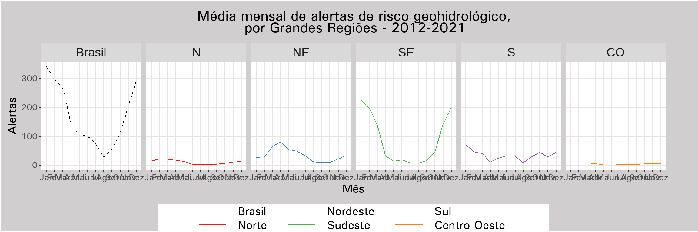

Code
library(tidyverse)
library(readxl)
library(writexl)
library(sf)
library(fuzzyjoin)
library(clock)
library(ggthemes)
library(showtext)
library(RColorBrewer)A ideia é juntar a divulgação “estática” — com uma breve explanação de um conjunto de variáveis das BATERs relacionadas num tema, com revisão na bibliografia do uso dessas variáveis e outras considerações, analisando os resultados observados na escala nacional e de grandes regiões, podendo citar alguns casos de UF — com uma parte interativa, disponibilizando os dados agregados por UF e município, juntamente com um mapa com as BATERs do município selecionado com as feições clicáveis, abrindo uma caixinha de texto com as informações básicas da BATER e as variáveis da mesma exploradas no tema da publicação.
Carrega as bibliotecas necessárias. São muitas, nesse caso.
library(tidyverse)
library(readxl)
library(writexl)
library(sf)
library(fuzzyjoin)
library(clock)
library(ggthemes)
library(showtext)
library(RColorBrewer)Carrega a tabela do Excel com os dados.
planilha <- read_excel("W:/DGC_ACERVO_CGEO/PROJETOS_EM_ANDAMENTO/Cemaden/BOLSISTAS/Joaquim/AtlasNacional/Alertas/AlertasCemaden2012-2021.xlsx")Produz a tabela de total de alertas por município.
Tot_Mun <- planilha %>%
group_by(`Código IBGE`, Evento) %>%
summarise(Tot_Event = n()) %>%
mutate(Evento = ifelse(Evento == "Geo/Hidro", "Hidrogeo", Evento)) %>%
pivot_wider(names_from = Evento, values_from = Tot_Event, values_fill = 0) %>%
mutate(tot_geo = Geo + Hidrogeo, tot_hidro = Hidro + Hidrogeo)Calcula as médias mensais por grande região e país e junta tudo numa mesma tabela, Med_Geral.
Med_GdReg_data <- planilha %>%
mutate(dataref = date_group(as.Date(planilha$Data), "month"),
mes = factor(date_format(dataref, format = "%m"),
labels = c("Jan", "Fev", "Mar", "Abr", "Mai", "Jun", "Jul", "Ago", "Set", "Out", "Nov", "Dez")),
GdReg = factor(as.numeric(substr(`Código IBGE`, 1, 1)), labels = c("N", "NE", "SE", "S", "CO")),
geologico = ifelse(Evento %in% c("Geo", "Geo/Hidro"), 1, 0),
hidrologico = ifelse(Evento %in% c("Hidro", "Geo/Hidro"), 1, 0)) %>%
group_by(GdReg, mes, dataref) %>%
summarise(Tot_Event = n(), Tot_geo = sum(geologico), Tot_hidro = sum(hidrologico)) %>%
ungroup() %>%
group_by(GdReg, mes) %>%
summarise(Media_geo = mean(Tot_geo), Media_hidro = mean(Tot_hidro), Media_Event = mean(Tot_Event)) %>%
# manobra esquisita para arrumar a tabela, rever esse código adiante de pivotagem
pivot_longer(cols = starts_with("Media_"), names_to = "Tipo", values_to = "Media") %>%
pivot_wider(names_from = c("mes", "Tipo"), values_from = Media, values_fill = 0) %>%
pivot_longer(cols = !GdReg, names_to = c("mes", "Tipo"), names_pattern = "(.*)_Media_(.*)", values_to = "Media") %>%
# até aqui.
ungroup() %>%
group_by(Tipo, mes) %>%
mutate(mes = factor(mes, levels = c("Jan", "Fev", "Mar", "Abr", "Mai", "Jun", "Jul", "Ago", "Set", "Out", "Nov", "Dez")))
Med_Pais_geral <- Med_GdReg_data %>%
group_by(Tipo, mes) %>%
summarise(Media = sum(Media)) %>%
mutate(GdReg = "Brasil") %>%
select(GdReg, mes, Tipo, Media)
Med_Geral <- Med_GdReg_data %>%
bind_rows(Med_Pais_geral) %>%
mutate(GdReg = factor(GdReg, levels = c("Brasil", "N", "NE", "SE", "S", "CO")))Carrega configurações de tema para os gráficos, desenvolvido pro Atlas Nacional Digital.
showtext_auto()
showtext_opts(dpi = 300)
font_add(family = "univers", regular = "C:/Windows/Fonts/univer.TTF")
theme_set(
theme_igray() +
theme(plot.title = element_text(family = "univers", face = "bold", size = 11, hjust = 0.5, vjust = 0.5, lineheight = 1.1, margin = margin(12, 0, 12, 0)),
legend.position = "bottom",
legend.title = element_blank(),
legend.background = element_rect(fill = "white"),
legend.text = element_text(family = "univers", face = "plain", size = 9, margin = margin(0, 15, 0, 5)),
legend.key.width = unit(1.5, "cm"),
plot.background = element_rect(fill = "#d0cece"),
plot.margin = margin(t = 0, r = 40, b = 0, l = 10 ),
axis.title = element_text(family = "univers", face = "plain", size = 9),
axis.text = element_text(family = "univers", face = "plain", size = 7)))
cores <- c("#000000", brewer.pal(5, "Set1"))
names(cores) <- c("Brasil", levels(Med_GdReg_data$GdReg))
colScale <- scale_color_manual(name = "GdReg", labels = c("Brasil", "Norte", "Nordeste", "Sudeste", "Sul", "Centro-Oeste"), values = cores)
lineScale <- scale_linetype_manual(name = "GdReg", labels = c("Brasil", "Norte", "Nordeste", "Sudeste", "Sul", "Centro-Oeste"), values = c(2, 1, 1, 1, 1, 1))graf_hidro <- Med_Geral %>%
filter(Tipo == "hidro") %>%
ggplot(aes(x = mes, y = Media, colour = GdReg, group = GdReg, linetype = GdReg)) +
geom_line(stat = "identity", position = "identity", size = 0.8, ) +
labs(title = "Média mensal de alertas de risco hidrológico,\npor Grandes Regiões - 2012-2021") +
xlab("Mês") +
ylab("Alertas") +
lineScale +
colScale +
theme(legend.margin = margin(0, 40, 0, 40))
graf_hidro
graf_geo <- Med_Geral %>%
filter(Tipo == "geo") %>%
ggplot(aes(x = mes, y = Media, colour = GdReg, group = GdReg, linetype = GdReg)) +
geom_line(stat = "identity", position = "identity", size = 0.8, ) +
labs(title = "Média mensal de alertas de risco geológico,\npor Grandes Regiões - 2012-2021") +
xlab("Mês") +
ylab("Alertas") +
lineScale +
colScale +
theme(legend.margin = margin(0, 40, 0, 40))
graf_geo
Ainda tenho que ver como definir o tamanho individual das figuras. Por enquanto tá definido globalmente, no início do documento, e em polegadas, eca.
graf_geral <- Med_Geral %>%
filter(Tipo == "Event") %>%
arrange(GdReg) %>%
ggplot(aes(x = mes, y = Media, colour = GdReg, group = GdReg, linetype = GdReg)) +
geom_line(size = 0.5) +
labs(title = "Média mensal de alertas de risco geohidrológico,\npor Grandes Regiões - 2012-2021") +
xlab("Mês") +
ylab("Alertas") +
lineScale +
colScale +
theme(legend.margin = margin(0, 40, 0, 40)) +
facet_wrap(vars(GdReg), nrow = 1)
graf_geral
Dá pra referenciar as imagens no texto, Figure 1, Figure 2 e Figure 3.
Existem muitas possibilidades de interatividade, em tabelas, gráficos e mapas. Teste primeiramente a produção de mapas, que me parece mais complexa. Para obter a interatividade rodando direto do navegador, deve-se utilizar o Observable. Infelizmente o proxy do IBGE bloqueia! Vou pedir pra DI liberar depois.
Carrega a biblioteca bertin.js para a produção de mapas
bertin = require("bertin")Carrega o JSON servido pelo serviço WFS do geoserver do IBGE. Ver aqui a lista de serviços disponbibilizada pelo IBGE. Tem bastante coisa! No caso das BATERs, elas já vêm com os variáveis da publicação, além da geometria. A grande vantagem de usar o serviço wfs é não precisar manter as camadas espaciais que forem utilizadas na parte interativa no repositório do site, economizando muito espaço de armazenamento.
jsonURL = "https://geoservicos.ibge.gov.br/geoserver/CGEO/ows?service=WFS&version=1.0.0&request=GetFeature&typeName=CGEO%3APARBR2018_BATER_MD&maxFeatures=600000&outputFormat=application%2Fjson"
bater = d3.json(jsonURL)Aqui é criado a caixinha de seleção do município. O ideal é fazer um de UF antes pra reduzir a lista resultante. Depois eu faço, na camada WFS das BATERs não tem a sigla da UF, só o geocódigo, mais difícil de escolher a UF né. Só botar uma tabelinha com isso e fazer o join que resolve.
viewof selmun = Inputs.select(
bater.features.map((d) => d.properties.municipio),
{
sort: true,
unique: true,
label: "Município"
}
)
municipioArray = bater.features.filter((d) => d.properties.municipio == selmun)Aqui as feições são filtradas segundo o município selecionado. O correto na verdade é aplicar o filtro antes de requisitar a camada wfs pra diminuir o tráfego de dados. Do jeito que está demora para carregar inicialmente o mapa, tem todo o tempo de recebimento da camada completa wfs do IBGE. Depois eu vejo como fazer.
municipio = ({
"type":"FeatureCollection",
"features":municipioArray
})Aqui produz o mapa com as BATERs do município selecionado. A biblioteca bertin é mais pra produzir cartogramas, não dá pra “passear” pelo mapa. Mas pode-se fazer, por exemplo, janelinhas pop up com os dados da BATER que aparecem ao clicar na mesma. Existem outras bibliotecas para trabalhar com mapas, a plot que é parecida com a bertin, e algumas de mapas mesmo, openlayer, leaflet e mapbox. Devo utilizar no final a a openlayer ou a leaflet.
Além de mapas, dá pra produzir as tabelas interativas (a pessoa pode filtrar por qualquer campo, por exemplo, e ordenar por qualquer coluna) e gráficos também. E tudo isso rodando no navegador, sem precisar de um servidor com interpretador de R ou Python instalados, com as bibliotecas como Shiny ou Dash nas versões certas e dispor de tempo de processador para processar as ações de todos os usuários simultâneos… O servidor só precisa servir o site, e nada mais.
simplemap = bertin.draw({
params: { background: "#bde1f0", margin: 10 },
layers: [{
type: "layer",
geojson: municipio,
fill: "#ff0000",
stroke: "#ff0000",
strokeWidth: 1,
symbol: "square",
symbol_size: 50
},
{
type: "tiles",
opacity: 1,
style: "openstreetmap",
}
]
})